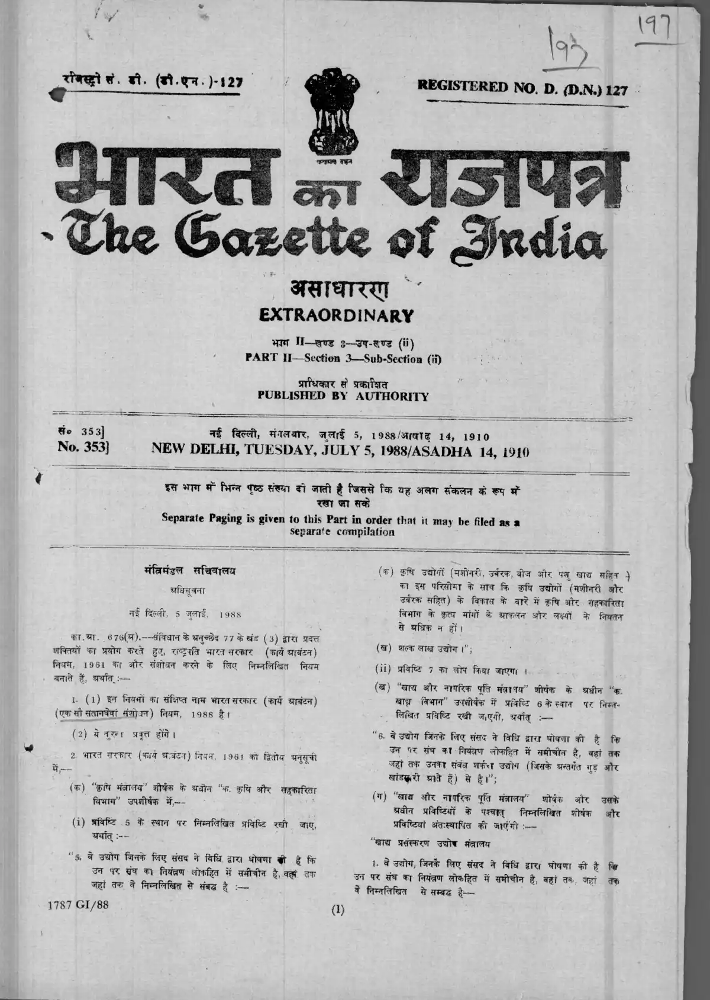
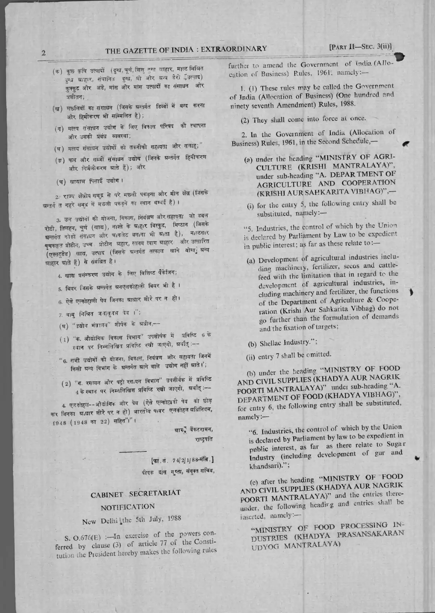
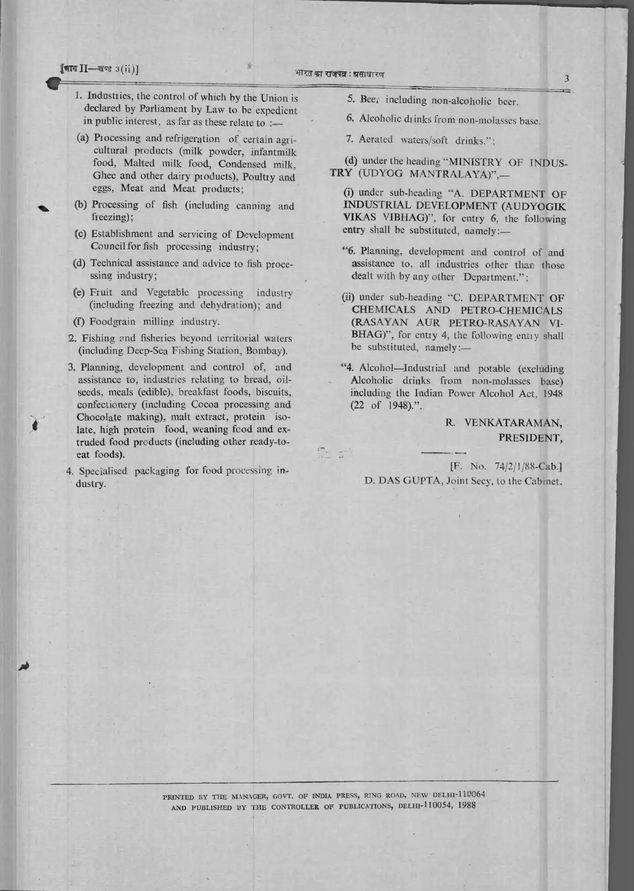

Amendment #197 (S.O. 676(E), 1988)
6 changes: 0 to the First Schedule, 6 to the Second Schedule. 6 applied
What it did to the ministries
- bornMinistry of Food Processing Industries is created (7 subjects) change 4 · histories: Food Processing
The order, page by page
Page 1 of 3

Page 2 of 3

1234Schedule 2 › MINISTRY OF AGRI- CULTURE › DEPARTMENT OF AGRICULTURE AND COOPERATION › entry 5
- 5. Industries, the control of which by the Union is declared by Parliament by Law to be expedient in public interest ; as far as these relate to :-
- a. Development of agricultural industries including machinery, fertilizer, secas and cattlefeed with the limitation that in regard to the development of agricultural industries, including machinery and fertilizer, the functions of the Department of Agriculture & Cooperation (Krishi Aur Sahkarita…
- b. Shellac Industry.
applied at schedule 2 › ministry MINISTRY OF AGRICULTURE › department A › part I › entry 5 in the Rules after #197
Schedule 2 › MINISTRY OF AGRI- CULTURE › DEPARTMENT OF AGRICULTURE AND COOPERATION › entry 7
applied at schedule 2 › ministry MINISTRY OF AGRICULTURE › department A › part I › entry 7 in the Rules after #197
Schedule 2 › MINISTRY OF FOOD AND CIVIL SUPPLIES › DEPARTMENT OF FOOD › entry 6
- 6. Industries, the control of which by the Union is declared by Parliament by law to be expedient in public interest, as far as there relate to Sugar Industry (including development of gur and khandsari).
applied at schedule 2 › ministry MINISTRY OF FOOD AND CIVIL SUPPLIES (KHADYA AUR NAGRIK POORTI MANTRA- LAYA) › department A ›… in the Rules after #197
after Schedule 2 › MINISTRY OF FOOD AND CIVIL SUPPLIES
- MINISTRY OF FOOD PROCESSING IN- DUSTRIES
- 1. Industries, the control of which by the Union is declared by Parliament by Law to be expedient in public interest, as far as these relate to :-
- a. Processing and refrigeration of certain agricultural products (milk powder, infantmilk food, Malted milk food, Condensed milk Ghee and other dairy products), Poultry and eggs, Meat and Meat products
- b. Processing of fish (including canning and freezing)
- c. Establishment and servicing of Development Council for fish processing industry
- d. Technical assistance and advice to fish processing industry
and 8 more
- e. Fruit and Vegetable processing industry (including freezing and dehydration); and
- f. Foodgrain milling industry.
- 2. Fishing and fisheries beyond territorial waters (including Deep-Sea Fishing Station, Bombay).
- 3. Planning, development and control of, and assistance to, industries relating to bread, oilseeds, meals (edible), breakfast foods, biscuits confectionery (including Cocoa processing and Chocolate making), malt extract, protein isolate, high protein food, weaning food and extruded food products…
- 4. Specialised packaging for food processing industry. PRINTED BY THE MANAGER, GOVT. OF 3
- 5. Bee, including non-alcoholic beer.
- 6. Alcoholic drinks from non-molasses base.
- 7. Aerated waters/soft drinks.
applied at schedule 2 › ministry MINISTRY OF FOOD PROCESSING IN- DUSTRIES in the Rules after #197
read page break
Page 3 of 3

56Schedule 2 › MINISTRY OF INDUS- TRY › DEPARTMENT OF INDUSTRIAL DEVELOPMENT › entry 6
- 6. Planning, development and control of and assistance to, all industries other than those dealt with by any other Department.
applied at schedule 2 › ministry MINISTRY OF INDUSTRY › department A › group_heading III › entry 6 in the Rules after #197
Schedule 2 › MINISTRY OF INDUS- TRY › DEPARTMENT OF CHEMICALS AND PETRO-CHEMICALS › entry 4
- 4. Alcohol-Industrial and potable (excluding Alcoholic drinks from non-molasses base) including the Indian Power Alcohol Act, 1948 (22 of 1948).
applied at schedule 2 › ministry MINISTRY OF INDUSTRY › department C › entry 4 in the Rules after #197
How this document was read
From the Government of India (Allocation of Business) Rules, 1961 and their amendments, as published by the Cabinet Secretariat (cabsec.gov.in), read by orgpedia. The readings of the older scanned gazettes have known gaps.